intro
wordpress is an open source software which means you can take a version an customize it as you whish
wordpress is an open source software which means you can take a version an customize it as you whish
when it comes to making websites on wordpress you have two optoins:
first you can make it on wordpress.com which has the wordpress version setup, updated, secure and ready to go. which means you don't have to see what are the security problems and solve them and you don't need to check for updates. Just pick your plan and go
far less customizable compared with the second option which is taking a version of wordpress on your machine and work it yourself as at the end of the day in case of wordpress.com they manage the website not you
second option is as mentioned is to download the software from wordpress.org/download
where you can:
note: i'm taking this course 14/11/2022
after install is finished start both Apache and MySQL
in the setup file of xampp wherever you chose it find htdocs this is the folder where you put the websites you want on the local server and it's the folder opened when you type Localhost in the browser
after you finish the install that link will lead you to the actual website, if you want to go to the adming panel got to http://localhost/wordpress/wp-admin/
database name: wordpress
notice that you should create database with the name wordpress on your machine
to create the database (in course elzero said go to localhost/phpMyAdmin but I fuond it outsite of htdocs (the localhost) so I simply copied and pasted it
then go to database tap
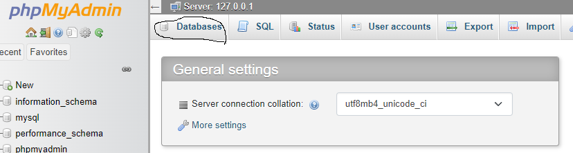type the name you want
choose utf8_general_ci for encription
phpMyAdmin by default makes the user name root and no password (thats' why we put the same info in wordpress setup )
to see the database user's in phpMyAdmin and their permissisons go to privilleges
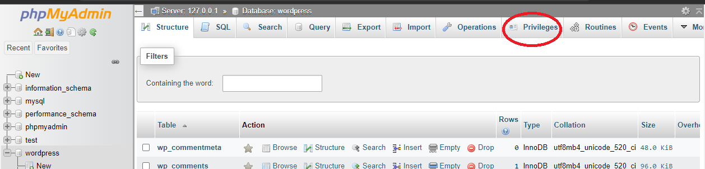he explained something about making another database and using the encription in the image below instead of the utf8_general_ci in case he wants to make another wordpress installation bu it didn't really understand wtf he wants
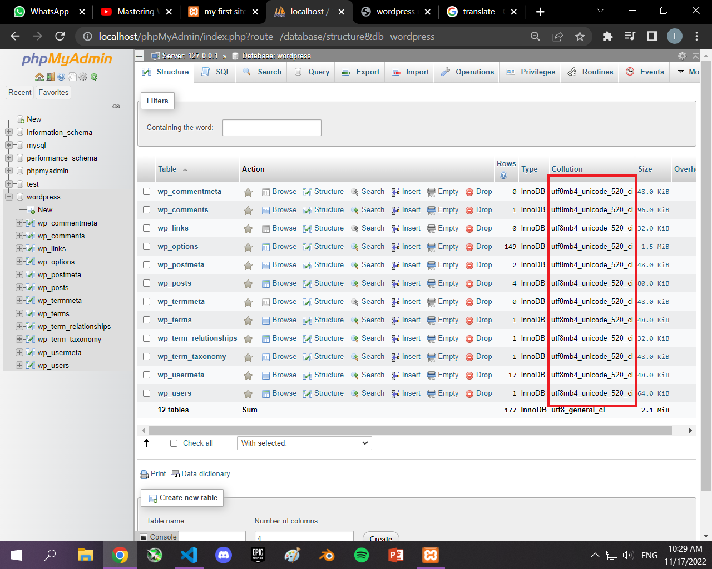explained how to install wordpress if you have a domain and hosting, just like local wordpress install but on the server you bought
also explained how to upload the files and manage them using filezilla ftp
didn't find it suitable for me in the mean time so didn't take notes
same as the previous lesson but using "cPanel" instead of "DirectAdmin"
to change the language simply go to sittings and you will find 'site language' showing you the installed and available languages
choose the language then hit save changes at the page
you can find the installed language files by going to the wordpress folder inside htdocs ===> wp-content ===> languages
notice that at first the folder languages won't exist unless you change the site language one time at lease
also notice that here we're changing the panel and controls language not the site content language (this is not how you make multilangual website)
elzero went on and explained how you can make your own language files for wordpress and how to contribute in the translation projects but I found the info irrelvant so didn't take notes about it
talking about each tabel in the wp database in case you needed to do major changes like changing a certain phrase or link that exists in hundreds of posts or in case you got hacked and don't have the admin username and password. From the database you can enter on admins and change the email and password
before securing wordpress you have to secure your machine (he won't talk about securing your machine he will talk about wordpress)
quick tips to secure your wordpress site:
first way is to secure the dashboard: one way to get to the dashboard is to type in the link of your wordpress site (either locally so you go to localhost/wordpress or hosted so you type the url to the domain you purchased) followed by /wp-admin
you can make a firewall on any folder you have on your website (including the wp-admin) to make a firewall:
now when you try to access the dashboard you'll be asked to enter the username and password of the fire wall (to be able after that to enter the username and password to the actual site)
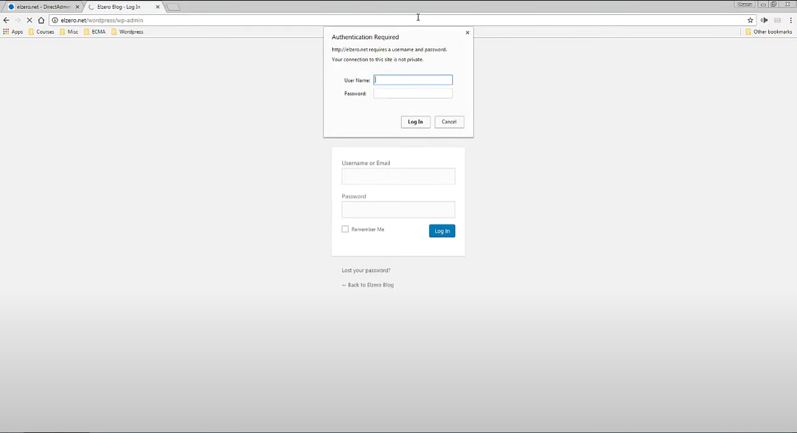now notice if you type the website link followed by /wp-login.php it will open the dashboard login page just fine without authintication or firewall
to solve the previous problem you can add a rename plugin to your website that will rename the wp-login.php for you so the hacker can't access it
in the video elzero just googled wp-login rename and said that you can find the plugin that suites you best
another tip is to always make sure to update the wordpress version (from the dashboard) as they continously patch loopholes
also you can enable auto update but be aware is it may break some stuff down in some customized wordpress versions
just google wp auto update and you will find some codes to add to the wp-config file (he illustrated how to auto update I just don't have energy to type)
make sure your password to access the site is hard to crack
you can use a password generator like identity safe from norton
and with such hard randomly generated password you might want to use a passowrd saving application like roboform or you can just count on google password
Overview of current state of your website and if any parts of it needs improvements.
shows the number of posts, pages, and comments, and you can access them by clicking on them
also at the bottom you find "WordPress 6.4.1 running Twenty Twenty-Four theme."
you can click on the theme name "Twenty Twenty-Four" to change it
Allows you to create a new post and save it as a draft. Also displays links to the 5 most recent draft posts you've started.
Shows the upcoming scheduled posts, recently published posts, and the most recent comments on your posts and allows you to moderate them.
shows the latest news of wordpress
when you hover over it, it shows you the following links:
they have a no-code contribution and a code based contribution
right after the "w" logo you will the see your wordpress website name which takes you to the actual website
it takes you to the comments page in which is all the comments on your page and options to control them
when you hover over it, it gives you the option to add a new:
when you are in the actual website you find a new item in the toolbar the "edit site" which allows you to edit the various aspects of the site like the content, maybe delete something, or change the colors or dimensions of an item
to go to category page: from the left bar > posts >categoreis
you will find the page devided into to sections:
as for the left one you will find:
if you're adding a main category just leave it
in the right one you will find a table that is devided into: the category name, decription, slug, and the count of articles that belong to that category
when you hover over the category name you'll see four options:
notice: Deleting a category does not delete the posts in that category. Instead, posts that were only assigned to the deleted category are set to the default category Uncategorized. The default category cannot be deleted.
after that paragraph you find another one telling you that categories can be converted into tags using "category to tag converter" which is a link you can click and it will take you to the import page that is in the tools in the left bar of the dashboard
also notice if you delete a category that was a parent to sub-categories the laters are automatically converted into main categories
to make a new post
at the top of the page you'll find a toolbar that has:
plus icon: which opens the blocks,pattern, and media panel on the left wher you can choose what to add in the current place of the article you're at in the moment
you can add paragraph, heading, list, image, and alot more options
three dots: where you can set the prefernces of the post page like showing the main left navbar of the dashboard or not, showing the top toolbar or not and many other optoins
but one of the most important options is visual editor or code editor which switch between the normal user friendly user interface which is just the words infront of you and the control icons or you can see the actual code
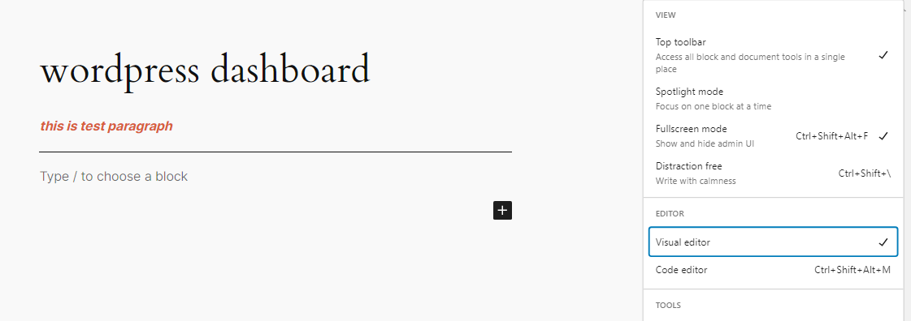 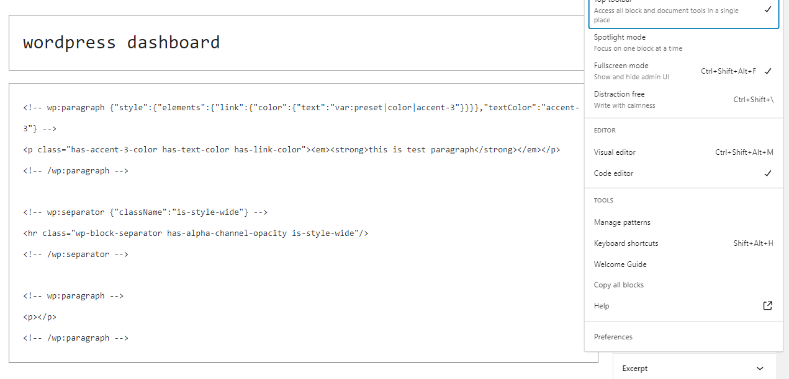when you make several modification on a draft wordpress saves every version of the draft just like github
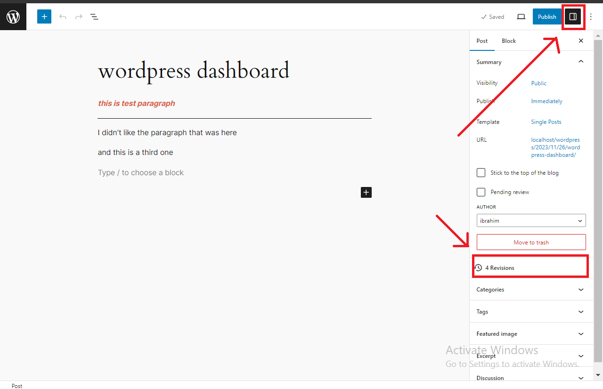when you click on it it will show you a comparison between the latest version (on the right) and the previous version (on the left) with a plus icon beside the added lines, and a minus icon beside the removed lines
you can go from a versino to another using the slider at the top of the page with every line in the slider representing a version
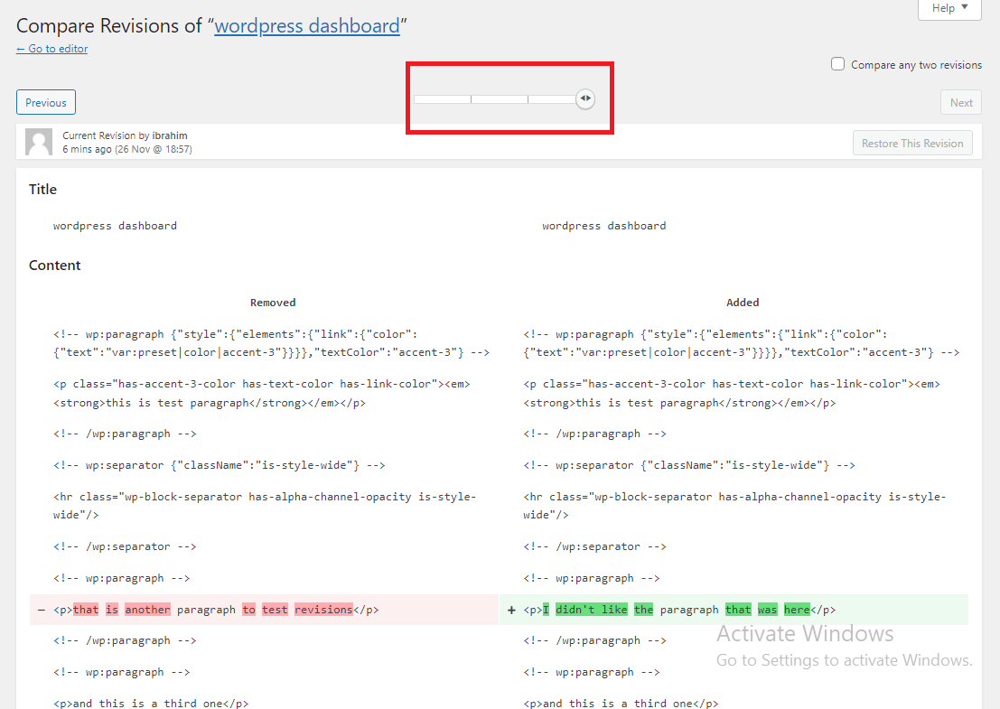also you can compare between any two versions by checking the "compare any two versions" checkbox on the right of the slider
you can restore any revision you want

it's a little annoying that wordpress compares versions in the code status not in the visual one so try to search how to make the comparison in the visual editor or status
the default status is draft if you're done and want it to be reviewed by one of your team you can change it's status to pending review by checking the checkbox in the settings panel
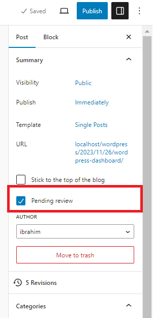then it will be added to the bending tab in the posts page
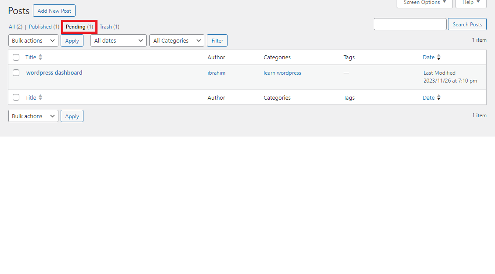you can either leave it as "immediately" or schedule it
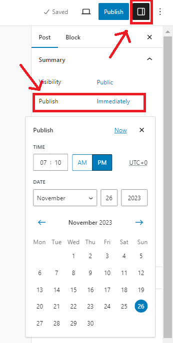obvously the schedule time is based on your timezone
funny enough I found out that mytime zone was set to utc+0 and my actual one is utc+2
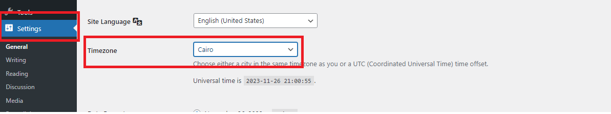you can either choose your country by the name or you can choose the timezone by the numbers